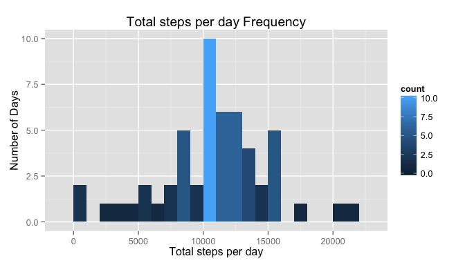
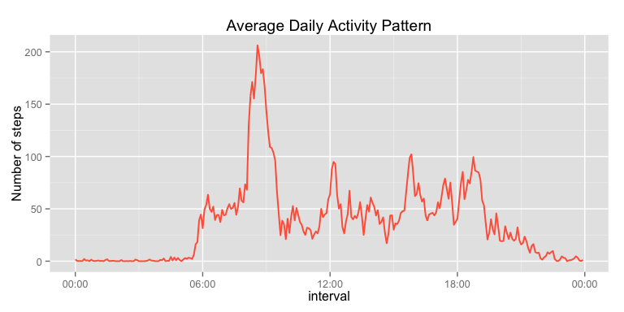
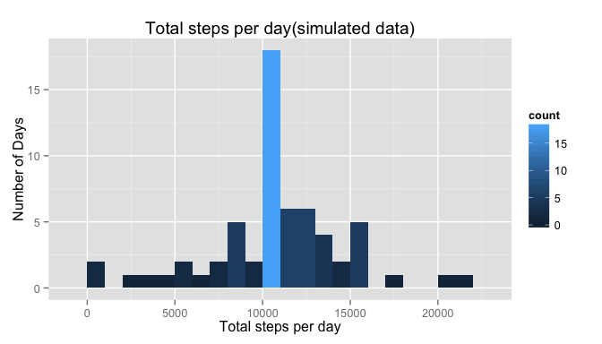
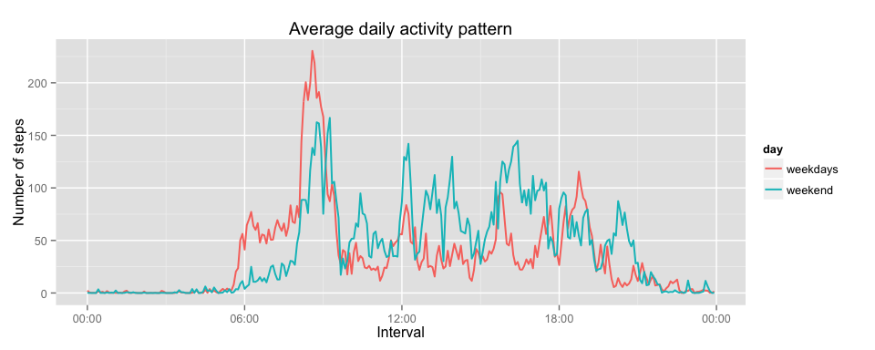

Daily Acitivity Pattern Analysis
Data
Dataset : Activity monitoring data The variables included in this dataset are:
steps: Number of steps taking in a 5-minute interval (missing values are coded as NA)
date: The date on which the measurement was taken in YYYY-MM-DD format
interval: Identifier for the 5-minute interval in which measurement was taken
The dataset is stored in a comma-separated-value (CSV) file and there are a total of 17,568 observations in this dataset.
Research Objectives
- Analyze the daily activity pattern, and compare the result with missing value filled in.
- Explore if there is difference of the daily activity pattern between weekdays and weekend.
Data Processing
Change the date and interval variable to time format
data <- read.csv("activity.csv", header = TRUE, sep = ",")
data$date_revised <- as.Date(data$date)
data$interval_revised <- sprintf("%04d", data$interval)
data$interval_time <- strptime(data$interval_revised, format = "%H%M")Analyze daily activity pattern without missing data
split data by date
s_date <- split(data, data$date_revised)
total_steps <- sapply(s_date, function(x) sum(x$steps))Make histogram for total number of steps taken each day
library(ggplot2)
qplot(total_steps, geom = "histogram", binwidth = 1000, fill = ..count.., xlab = "Total steps per day", ylab = "Number of Days", main = "Total steps per day Frequency")
#plot <- hist(total_steps, main = "Total steps per day", xlab ="total number of steps taken each day")Calculate mean and median total number of steps taken per day
mean_steps <- mean(total_steps, na.rm = TRUE)
median_steps <- median(total_steps, na.rm = TRUE)
mean_steps## [1] 10766
median_steps## [1] 10765
mean and median daily steps with out missing value mean steps:1.0766 × 104 median steps:10765.
Plot for average daily activity pattern
library(scales)
s_pattern <- split(data, data$interval_revised)
average_steps <- sapply(s_pattern, function(x) mean(x$steps, na.rm = TRUE))
day_pattern <- data.frame(time = data$interval_time[1:288], ave_steps = average_steps)
p_day <- ggplot(day_pattern, aes(x = time, y = ave_steps))
p_day+geom_line(colour = "tomato", size = .7)+labs(x = "interval", y = "Number of steps", title = "Average Daily Activity Pattern")+scale_x_datetime(labels= date_format("%H:%M"))
#plot(data$interval_time[1:288], average_steps, type = "l", col = "blue", main = "Average daily activity pattern", xlab = "interval", ylab = "Number of steps")Get the most active 5-minute interval
max_index <- which(average_steps == max(average_steps))
max_interval <- data$interval_revised[max_index]
max_interval## [1] "0835"
Most avtive 5-minute interval 0835 on average across all the days in the dataset, contains the maximum number of steps.
Explore daily activity pattern with Missing data
Imputing missing valuse
Calculate and report total number of missing values in the dataset.
bad <- is.na(data$steps)
num_NA <- length(data$steps[bad])
num_NA## [1] 2304
Total number of missing values of steps: 2304
Fill all the missing value by the mean for that 5-minute interval
strategy
- add a column to dataframe called "steps_revised".
- use mean for 5-minute interval steps as the value in "step_revised" column if it is missing value in original "steps" value. Otherwise, copy the steps number to the "step_revised" column.
- create a new dataset equal to the original one, but replace the original "step" column's value by the "step_revised" column's value.
data$average_steps <- average_steps
for (i in seq(nrow(data))) {
if (is.na(data[i, "steps"])) {
data$steps_revised[i] <- data[i, "average_steps"]
}
else {
data$steps_revised[i] <- data[i, "steps"]
}
}Create a new dataset with missing data filled in.
data_revised <- data.frame(steps = data$steps_revised, date = data$date, interval = data$interval)
head(data_revised)## steps date interval
## 1 1.71698 2012-10-01 0
## 2 0.33962 2012-10-01 5
## 3 0.13208 2012-10-01 10
## 4 0.15094 2012-10-01 15
## 5 0.07547 2012-10-01 20
## 6 2.09434 2012-10-01 25
Plot steps taken each day, with missing value filled in
s_date_revised <- split(data, data$date_revised)
total_steps_revised <- sapply(s_date_revised, function(x) sum(x$steps_revised, na.rm = TRUE))
qplot(total_steps_revised, geom = "histogram", binwidth = 1000, fill = ..count.., xlab = "Total steps per day", ylab = "Number of Days", main = "Total steps per day(simulated data)")
#plot <- hist(total_steps_revised, main = "Total steps per day_revised", xlab ="total number of steps taken each day_revised")Calculate mean and median total number of steps taken per day.
mean_steps <- mean(total_steps_revised)
median_steps <- median(total_steps_revised)
mean_steps## [1] 10766
median_steps## [1] 10766
mean and median steps,with missiong value filled in mean steps:1.0766 × 104 median steps: 1.0766 × 104.
Conclusion: Mean and median value almost the same after we filled in the missing value with the mean steps for that 5-minute interval. Which means missing values don not have big impact on the research result**
Compare activity patterns between weekdays and weekends
Create a new factor variable indicating weekday or weekend
library(timeDate)
data$day_type <- "weekdays"
data$day_type[isWeekend(data$date_revised)] <- "weekend"
data$day_type <- as.factor(data$day_type)Calculate average steps of each 5-minutes interval for weekdays and weekend
#seperate the weekdays and weekend data into two groups
s_dayType <- split(data, data$day_type)
s_pattern <- lapply(s_dayType, function(x) split(x, x$interval_revised))
data_weekdays <- s_pattern[["weekdays"]]
data_weekend <- s_pattern[["weekend"]]
#calculate the weekdays and weekend's average steps for each 5-minutes interval.
average_steps_weekdays <- sapply(data_weekdays,function(x) mean(x$steps_revised))
average_steps_weekend <- sapply(data_weekend,function(x) mean(x$steps_revised))Plot activity pattern for weekdays & weekend
weekdays <- data.frame(time = data$interval_time[1:288], ave_steps = average_steps_weekdays, day = "weekdays")
weekend <- data.frame(time = data$interval_time[1:288], ave_steps = average_steps_weekend, day = "weekend")
pattern <- rbind(weekdays, weekend)
library(ggplot2)
library(scales)
p <- ggplot(pattern, aes(time, ave_steps,group = day))
p + geom_line(aes(colour = day), size = .7) + labs(x = "Interval", y="Number of steps", title = "Average daily activity pattern")+scale_x_datetime(labels= date_format("%H:%M"))